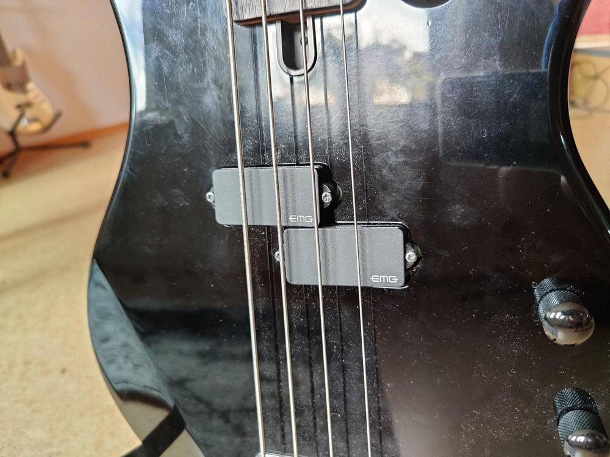
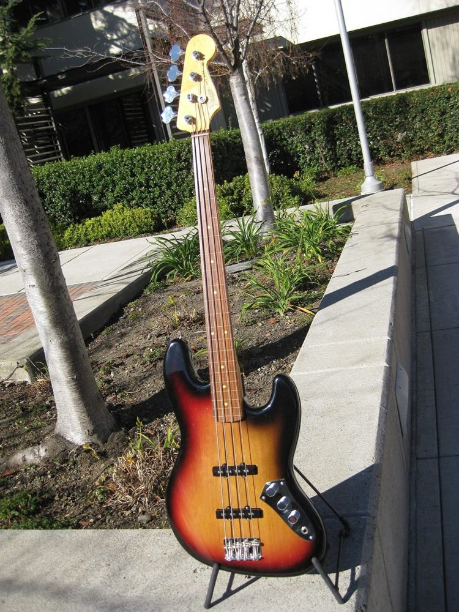

故事
他拿到一把電貝斯，第一件事是把上面的金屬條全拔掉。他是 Jaco Pastorius，在佛羅里達長大。那些金屬條叫品絲，用來標出每個音的位置。
據說他用一把奶油刀把品絲撬起來，再用木頭填補劑把縫補平。他還在指板上塗了一層船用的環氧樹脂，保護木頭。沒有品絲，聲音變得圓潤，可以像人聲一樣滑來滑去。

1976 年，他的第一張個人專輯推出，貝斯手都嚇到了。同一年，他加入了融合爵士樂團 Weather Report。據說他第一次見到團長，就說自己是世界上最好的貝斯手。下次聽到會唱歌的貝斯，想想那把被拔光品絲的琴。
故事後面
Jaco Pastorius 自己動手拔掉電貝斯的品絲，據說用奶油刀撬起、再用填補劑補平，還塗上船用環氧樹脂。
沒有品絲，貝斯的聲音變得圓潤，可以像人聲一樣滑動。他的第一張專輯讓貝斯手都嚇到了。
同一年他加入 Weather Report，把貝斯變成可以唱旋律的主角。

這樣聽
這首整首都是貝斯獨奏，聽那些像鐘聲的泛音。
逐句英文
He got an electric bass, and the first thing he did was pull out all the metal strips.
He was Jaco Pastorius, who grew up in Florida.
Those strips are called frets; they mark where each note is.
Reportedly he pried the frets out with a butter knife and filled the slots with wood putty.
He coated the fingerboard with marine epoxy to protect the wood.
Without frets, the tone turned round and could slide like a human voice.
In 1976 his first solo album came out and stunned bass players.
That same year he joined the fusion band Weather Report.
Reportedly, on first meeting the bandleader, he announced he was the greatest bass player in the world.
Next time you hear a bass that sings, think of the one stripped of its frets.
查證筆記與出處
奶油刀、填補劑、船用環氧樹脂：Jaco 自述，寫據說。「最好的貝斯手」是 Joe Zawinul 轉述的見面故事，寫據說。
一分鐘影片版在 Instagram @jazz101tw。